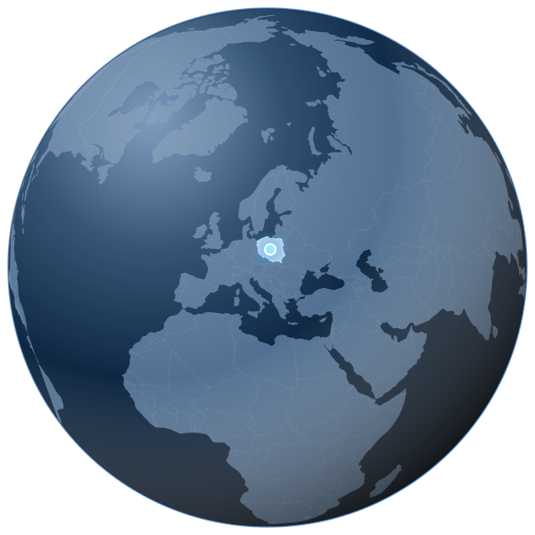

Practical innovation
Tools designed around real use cases.
We build focused software for developers and organizations. Practical tools, clear product scope and reliable workflows — developed in Poland for an international market.

We develop independent software tools for API validation, regulatory monitoring, data quality and specialist business workflows. Every product has its own scope and delivery model.
Tools designed around real use cases.
Transparent capabilities and limitations.
Thoughtful controls and product-specific architecture.
Iterative development and maintainable solutions.
Built in Poland for teams working across borders. Our products help developers and organizations improve technical workflows, data quality and operational confidence.
Explore our products →